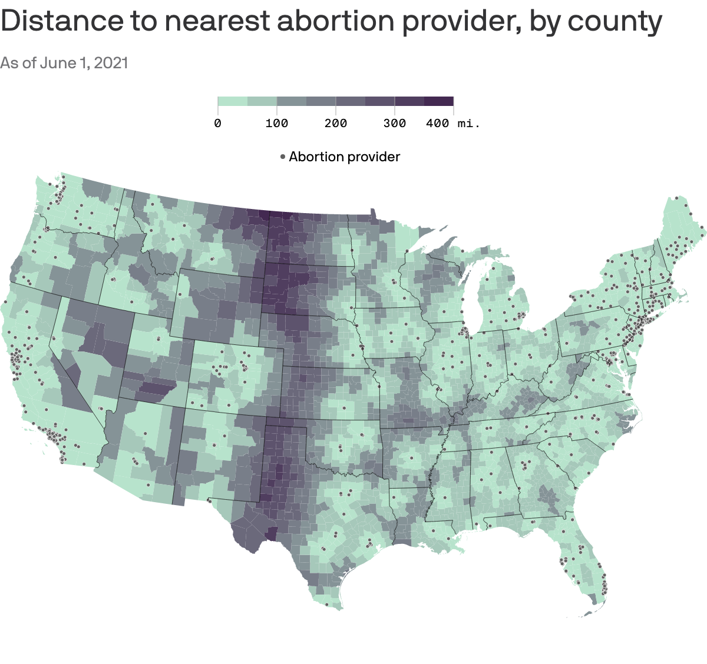

Does fundraising predict Arizona's Senate winner?

In collaboration with a colleague, I used R to cull data from the FEC API. Then, we wrote about our findings and I visualized the data in maps and bar charts.
How the coronavirus pandemic changed mobility habits, by state

Abortions could require 200-mile trips if Roe is overturned

A Visuals colleague and I were among the first reporters to use this data source to create an interactive map charting travel distance to abortion care, which became a go-to resource for many other outlets.